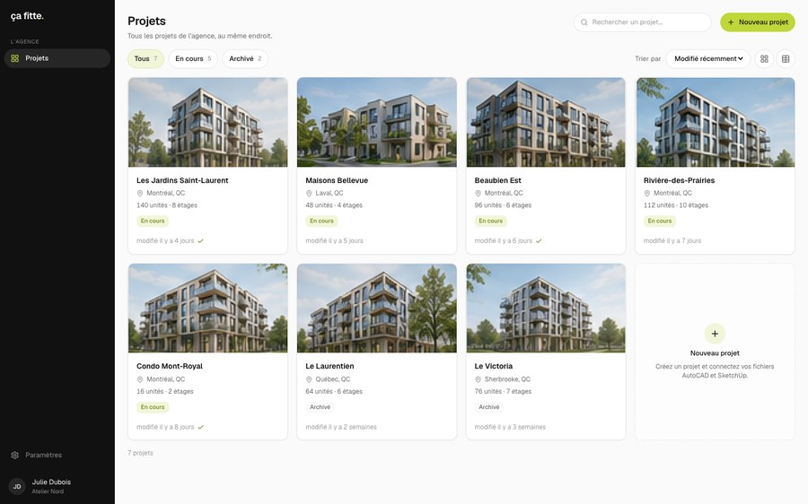
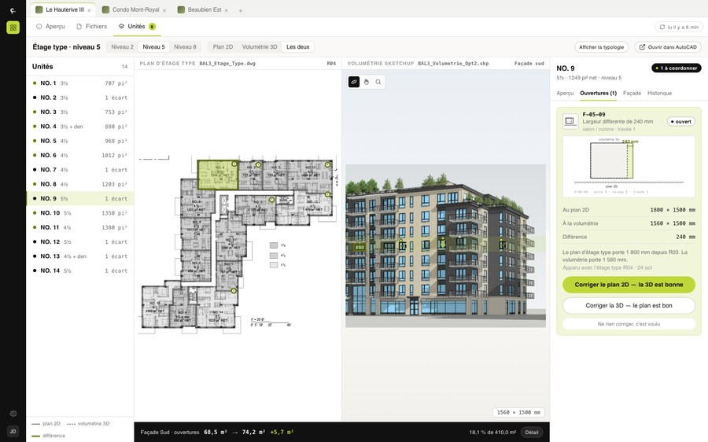

Six header treatments, four card layouts, six naming pairs. Geist and Geist Mono only; every icon and arrow is Lucide. Cards are centred on the page in all four layouts.
Monday, October 26 · Prototype 1
Monday, October 26
Monday, October 26
Monday, October 26
Monday, October 26

1AProjects, connected AutoCAD and SketchUp files, the floor plan viewer and the unit inspector. One source of truth for what has been drawn.
Open 1A
1BThe same platform, one layer added inside Unités: plan and volume side by side, a window status on every unit, a glazing total that moves.
Open 1BThe working product. Projects, connected AutoCAD and SketchUp files, the floor plan viewer with the 14 units of the typical floor, and the unit inspector. No window coordination yet.
Open 1A 1BThe same platform, one layer added inside Unités. The 2D plan and the SketchUp volume sit side by side, every unit carries its window status, and the south façade glazing total moves as you decide.
Open 1BMonday, October 26
Projects, connected files, the floor plan viewer and the unit inspector. One source of truth for what has been drawn.
Open 1A 1BPlan and volume side by side inside Unités, a window status on every unit, and a façade glazing total that moves as you decide.
Open 1BMonday, October 26
The working product. Projects, connected AutoCAD and SketchUp files, the floor plan viewer with the 14 units of the typical floor, and the unit inspector.
Open 1BThe same platform, one layer added inside Unités. Plan and volume side by side, a window status on every unit, a façade glazing total that moves as you decide.
Open| Option | 1A | 1B |
|---|---|---|
| N1 · state | The platform as it standsPlain, honest, slightly passive. | The platform with window coordinationSays exactly what was added. |
| N2 · time | TodayTwo words. Works only with the subtitle doing the explaining. | NextShort, but hides what changed. |
| N3 · question | What we haveInvites comparison; frames the session as a choice. | What we could addSignals it is a proposal, not a decision. |
| N4 · object | Units and drawingsNames the content instead of the status. | Units, drawings and the 3D modelThe addition is literally the third noun. |
| N5 · task | Find a unitDescribes what you do on the screen. | Find a unit, check its windowsStrongest for user testing: it hints at the task without scripting it. |
| N6 · version | BaselineNeutral, but jargon for a non-product audience. | Baseline + coordination layerPrecise, cold. |